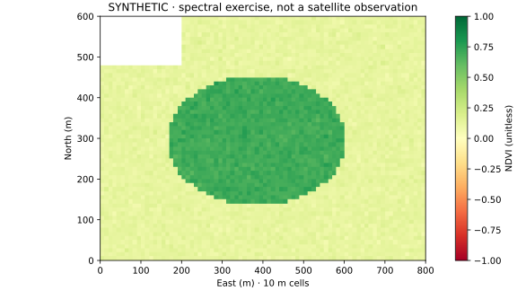

PART 06 / EARTH OBSERVATION
22 · Sentinel-2A에서 시작하는 식생지수 분석
L2A 반사도, SCL 구름 마스크, 격자 정렬을 거쳐 NDVI를 해석합니다.
이 페이지에서
목표: 위성영상의 값·품질·해상도를 확인하고 식생 신호를 계산합니다. 선수: Rasterio, NumPy, CRS/NoData. 시간: 합성 예제 45분, 실자료 취득·전처리 별도. 범위: Sentinel-2A를 포함한 Sentinel-2 자료군. 아래 그림은 실제 Sentinel 관측이 아닌 합성 반사도입니다.
개념
Sentinel-2는 여러 파장대의 반사 신호를 관측합니다. 식생은 적색과 근적외선에서 다른 반응을 보이며, NDVI는 두 반사도의 대비를 요약합니다.
NDVI = (NIR − Red) / (NIR + Red)
이번 장은 B08(근적외선)과 B04(적색)의 10m 격자를 사용합니다. L1C의 TOA(대기 상단)와 L2A의 SR/BOA(대기 보정된 지표) 반사도를 섞지 않습니다. Sentinel-2A는 위성 플랫폼 이름이고 L2A는 처리 수준입니다. “2A”라는 표기가 닮았지만 다른 의미입니다. SentiWiki 제품 설명
왜 필요한가
공원 주변 녹지의 분포와 같은 계절의 연도별 변화를 비교할 수 있습니다. NDVI만으로 수종·생육 건강·물 부족 원인을 확정하지 않습니다. 촬영 시점, 토양 배경, 그림자, 구름, 관측각이 결과에 영향을 줍니다. Sentinel-2에는 열적외선 밴드가 없으므로 NDVI 지도를 지표면 온도 지도라고 부르지 않습니다. 도시 열환경은 별도의 열 관측자료와 연결하는 확장 주제입니다.
3,000㎡ 대상지는 10m 픽셀의 면적으로 약 30셀입니다. 이번 합성 예제는 800m × 600m 주변 환경을 사용합니다. 공원 내부의 수목 한 그루보다 주변 녹지 맥락에 맞는 규모입니다. 밴드·해상도의 근거는 Sentinel-2 미션 설명에 있습니다.
핵심 API와 밴드
| 입력/도구 | 역할 | 주의 |
|---|---|---|
| B02/B03/B04 | 청색·녹색·적색, RGB 합성 | 원래 10m |
| B08 | 넓은 근적외선, NDVI | 10m, B8A와 바꿔 쓰지 않음 |
| B05/B06/B07/B8A, B11/B12 | red-edge·좁은 NIR·SWIR | 원래 20m, 정렬 필요 |
| B01/B09/B10 | 대기 관련 밴드 | 원래 60m, B10은 L2A 지표 반사도 산출물에서 제외 |
| SCL | 픽셀별 장면 분류 | 범주값, nearest 보간 |
Rasterio / WarpedVRT |
영상 읽기·다른 격자에 정렬 | CRS + transform + width/height |
NumPy divide(..., where=...) |
유효픽셀 NDVI | NoData·0 분모·마스크 |
위 해상도는 센서 밴드의 원해상도입니다. 다운로드 상품에는 재표본화된 밴드가 여러 해상도 폴더에 함께 있을 수 있습니다. SAFE 내부 JP2·XML과 서비스가 제공하는 COG/GeoTIFF를 구별합니다.
최소 실행 예제
아래 함수를 그대로 실행한 뒤 작은 반사도 배열을 넣습니다. 이 함수에 넣는 모든 배열은 이미 같은 격자여야 합니다.
import numpy as np
def ndvi(red, nir, scl, *, quantification, red_offset, nir_offset):
if quantification <= 0:
raise ValueError("quantification must be positive")
if red.shape != nir.shape or red.shape != scl.shape:
raise ValueError("Align band and SCL grids before calculation")
red = np.ma.asarray(red, dtype="float32")
nir = np.ma.asarray(nir, dtype="float32")
# Conservative policy: only vegetation, bare/not-vegetated and water.
valid = (~np.ma.getmaskarray(red) & ~np.ma.getmaskarray(nir)
& ~np.ma.getmaskarray(scl)
& np.isin(np.ma.getdata(scl), [4, 5, 6]))
r = (red.filled(np.nan) + red_offset) / quantification
n = (nir.filled(np.nan) + nir_offset) / quantification
valid &= np.isfinite(r) & np.isfinite(n) & ((n+r) > 1e-6)
result = np.full(red.shape, np.nan, dtype="float32")
np.divide(n-r, n+r, out=result, where=valid)
return result
red = np.array([[0.10, 0.20]])
nir = np.array([[0.50, 0.30]])
scl = np.array([[4, 9]]) # vegetation, high-probability cloud
print(ndvi(red, nir, scl, quantification=1, red_offset=0, nir_offset=0))
# [[0.6666666, nan]]
이번 정책은 SCL 4(식생), 5(비식생), 6(물)만 보수적으로 남깁니다. 0(결측), 1(포화/불량), 2(어두운 영역/지형 그림자), 3(구름 그림자), 7(미분류), 8·9(구름), 10(권운), 11(눈/얼음)은 제외합니다. 모든 분석의 유일한 정답은 아니므로 연구 목적에 따라 정책과 제외 비율을 기록합니다. 구름 주변 잔여 오염도 육안 확인합니다. L2A 밴드·SCL 정의
조경·도시 실무 예제
1. 실제 자료를 선택하기
Copernicus Browser에서 한국 대상지 범위, 촬영 기간, Sentinel-2 L2A를 선택합니다. Sentinel-2A가 연구 조건이면 product metadata의 platform이 해당 위성인지 확인합니다. 장면 전체 cloud cover 필터만으로 대상지의 맑은 픽셀을 보장하지 않습니다.
상품 ID, 획득일, 타일, 처리 baseline, cloud cover, 원본 이용조건을 저장합니다. 검색을 반복해야 한다면 CDSE STAC 문서의 https://stac.dataspace.copernicus.eu/v1/와 sentinel-2-l2a 컬렉션을 사용합니다. bbox는 경도·위도 순서이며 반환된 assets의 실제 키와 href를 확인합니다. 카탈로그 검색 성공과 원본 asset 다운로드 권한은 별개입니다. 계정·인증이 필요한 다운로드는 제공기관 절차를 따릅니다.
2. 반사도 값을 확인하기
원본 SAFE의 DN은 제품 XML에 적힌 band별 offset과 quantification으로 변환합니다. 원본에서 DN=0은 먼저 결측으로 처리합니다.
reflectance = (DN + BOA_ADD_OFFSET) / BOA_QUANTIFICATION_VALUE
PB 04.00 이후 offset이 도입된 제품을 단순히 10,000으로만 나누면 NDVI가 달라질 수 있습니다. 이미 보정·harmonize된 서비스 반사도에는 같은 보정을 두 번 적용하지 않습니다. 공식 radiometry 설명
3. 범위를 줄이고 격자를 정렬하기
먼저 관심지역과 작은 주변부로 B04/B08을 자릅니다. SCL을 아래처럼 B04의 정확히 같은 격자에 정렬해 작은 GeoTIFF로 저장합니다. red_path, scl_path는 취득한 파일 경로로 지정해야 합니다. 다음 구문은 실제 상품을 준비한 뒤 사용하는 전처리 안내이며 이번 검증에서는 원본 Sentinel 자료를 다운로드하지 않았습니다.
from rasterio.vrt import WarpedVRT
from rasterio.enums import Resampling
import rasterio
with rasterio.open(red_path) as ref, rasterio.open(scl_path) as src:
with WarpedVRT(
src, crs=ref.crs, transform=ref.transform,
width=ref.width, height=ref.height,
resampling=Resampling.nearest, nodata=0
) as aligned:
scl_on_red_grid = aligned.read(1, masked=True)
profile = ref.profile.copy()
profile.update(driver="GTiff", dtype="uint8", nodata=0, count=1)
with rasterio.open("scl_aligned.tif", "w", **profile) as dst:
dst.write(scl_on_red_grid.filled(0).astype("uint8"), 1)
SCL의 20m 셀을 10m로 나눠도 품질 정보의 원래 해상도가 높아지지는 않습니다. 반사도 밴드를 재투영할 때는 연속값 보간 정책을 기록합니다. Rasterio virtual warping
4. 실행하고 비교하기
전체 코드는 합성 모드와 작은 실제 래스터 처리 모드를 제공합니다.
python books/python-geospatial/examples/sentinel2_ndvi.py --demo --out generated/satellite
실제 파일 처리 예시입니다. 아래 숫자는 해당 XML에서 quantification=10000, 두 offset=-1000임을 확인한 경우에만 사용합니다. 원본·서비스마다 확인하고 수정합니다.
python books/python-geospatial/examples/sentinel2_ndvi.py --red B04_crop.tif --nir B08_crop.tif --scl scl_aligned.tif --quantification 10000 --red-offset -1000 --nir-offset -1000 --out generated/ndvi.tif
공원 경계와 NDVI를 겹쳐 유효셀 수·비율·중앙값·분포를 함께 보고합니다. 연도 비교는 비슷한 계절·촬영 조건을 맞추고 유효픽셀의 공간 범위도 확인합니다. 한 날짜의 NDVI 차이를 곧바로 녹지 증가나 정책 효과로 해석하지 않습니다.
시각화

색 범위를 날짜마다 자동 조정하면 같은 색이 다른 값을 뜻하게 됩니다. 비교 지도는 공통 범례를 쓰고 결측값을 별도로 표시합니다. 지수의 극단값은 마스킹·반사도 보정을 먼저 점검한 뒤 해석합니다.
흔한 오류
| 증상 | 원인 → 수정 |
|---|---|
| 구름 지역이 녹지처럼 나타남 | 장면 cloud cover만 적용 → 픽셀 SCL·그림자·유효영역 검사 |
| 날짜별 지수가 체계적으로 다름 | offset 또는 처리 수준 혼용 → 상품 메타데이터와 서비스 보정 확인 |
| 경계가 어긋남 | CRS만 통일 → transform·shape·해상도도 정렬 |
| SCL에 소수점 클래스 | bilinear 보간 사용 → nearest 사용 |
| 메모리 부족 | 전체 100km급 타일 동시 로드 → window/AOI crop로 축소 |
| 작은 공원의 변화가 불안정 | 혼합픽셀·계절성 → 더 큰 주변부와 현장 자료로 교차 검증 |
연습문제
- raw red DN=2000, NIR DN=6000에서 두 offset=-1000, quantification=10000일 때 NDVI를 계산하세요. offset을 생략한 값과 비교하세요.
- SCL 7을 포함하는 정책으로 바꾸고 유효비율과 NDVI 분포가 어떻게 달라질지 설명하세요.
- NDVI로 개별 수목의 상태를 판단하기 어려운 이유를 공간해상도·생리·촬영 조건 측면에서 적으세요.
검산 힌트
보정한 반사도는 0.1과 0.5로 NDVI는 약 0.667입니다. offset을 생략하면 0.5입니다. 이 값들은 교육용 입력의 결과입니다.
다음 단계
NDWI(녹색–NIR)와 MNDWI(녹색–SWIR), NDBI(SWIR–NIR)는 서로 다른 질문을 다룹니다. 지수 이름과 밴드 정의를 명시하고 적용 논문을 확인합니다. 다음은 지형·영상·도로 정보를 함께 쓰는 GeoAI와 BIM 연결입니다.
출처와 자료 이용
확인일 2026-09-30. Copernicus 공식 문서와 제품 명세를 기준으로 작성했습니다. 실제 상품의 이용조건은 CDSE 이용조건과 연결된 Sentinel data legal notice를 확인합니다. 실제 가공 영상을 게시할 때는 적용 조건에 따라 원자료 연도와 수정 사실을 명시합니다. 이 장의 합성 그림에는 실제 관측자료 출처 문구를 붙이지 않습니다.